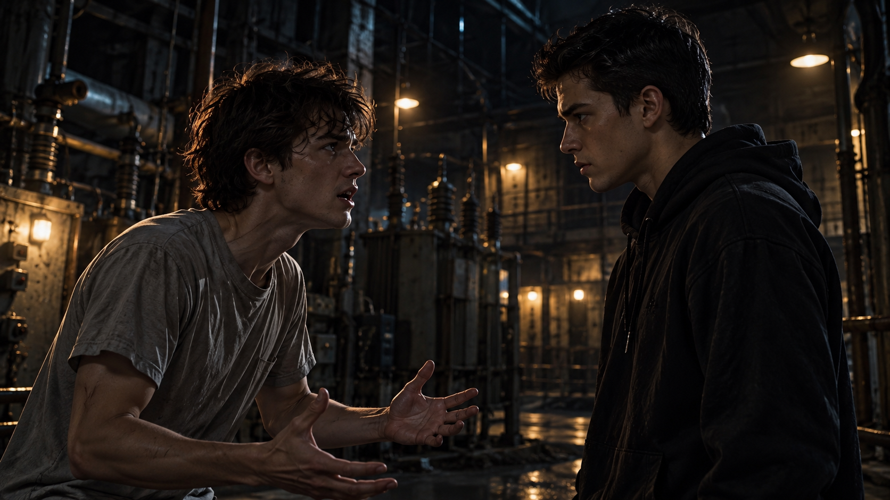

WHITE MAGIC ART STUDIO
第十一章
父親？
美國・紐約・廢棄教堂
「柴克——！」
那聲怒吼將柴克從恍惚中拉了回來。
下一秒，一隻手猛地扣住他的手腕。
「你瘋了嗎？！」
柴克被用力扯向後方，踉蹌了好幾步。掌心的血從那個男人面前掠過，只差一點，就要碰上對方伸出的手。
「克……克里斯？」
柴克還沒站穩，一道金色雷光已從他身後呼嘯而過。
轟——！
男人被正面擊中，向後滑出數公尺，狠狠撞上講壇。木板碎裂，塵埃從上方落下。
柴克睜大眼睛。
「爸……」
「他不是你爸！」
另一個聲音從高處傳來。
柴克猛然抬頭。
二樓殘破的欄杆後，雷站在陰影之中。黑色菱形晶體「阿法」懸浮在他身前，金色雷電沿著晶體表面不斷跳動。
柴克從來沒看過雷露出那樣的表情。
雷死死盯著講壇前的男人。
「你這個骯髒的東西。」
阿法的光芒再次增強。
「沒有資格用我哥的臉說話。」
「雷叔叔……」
男人扶著破裂的講壇，緩緩站起身。
肩膀上還殘留著金色電流。
他卻笑了。
「十五年了。」
男人活動了一下肩膀。
「你還是一樣衝動啊，雷。」
雷的眼神一沉。
「閉嘴。」
「怎麼？」
男人抬頭望著他。
「連哥哥的聲音都不想聽了？」
轟！
第二道金雷直接轟向男人的臉。
男人猛然側身，雷光擦過他的肩膀，擊碎後方石柱。
「我叫你閉嘴！」
柴克怔怔地望著二樓。
雷沒有猶豫。
甚至沒有試著確認那個男人的身分。
他看著那張臉時，眼中只有憤怒。
柴克低頭，看向自己仍在滲血的掌心。
剛才那個男人說的話，一句句重新浮現在腦海。
我一直都為你驕傲。
讓我回來。
「走！」
克里斯猛地拉住他。
「等等！」
柴克回頭。
「他剛才說——」
「我不管他跟你說了什麼！」
克里斯幾乎是在吼。
「現在跟我走！」
「可是他說他是……」
克里斯突然停下腳步。
他轉過身，抓著柴克的手沒有鬆開。
「柴克。」
他的聲音壓得很低。
「爸爸死了。」
柴克僵住。
「十五年前。」
克里斯看著他。
「那個東西不是他。」
柴克張了張嘴，卻說不出話。
就在這時——
「真感人。」
陰影中傳來另一個聲音。
鮑勃緩緩走出來，將兜帽往後掀開。
柴克一眼認出那張臉。
「你……」
克里斯立刻將弟弟拉到身後。
「離他遠一點。」
鮑勃沒有理會。
他抬頭看向二樓，腳下的黑水開始沿著地磚擴散。
「塞西爾・約爾森。」
雷冷冷地開口。
鮑勃停住腳步。
柴克看向雷。
塞西爾？
鮑勃臉上的笑容淡了幾分。
「真久沒有人叫這個名字了。」
雷沒有回答。
阿法猛然射出一道金雷！
同一瞬間，地面上的黑水暴起，化作數道水柱迎面撞上雷光。
轟！
衝擊震得整座教堂一陣搖晃。
「走！」
克里斯抓住柴克，朝出口衝去。
然而兩人才剛跑到中央走道——
砰！
前方地磚猛然炸裂。
數道黑影從裂縫中竄出。
惡魔。
克里斯立刻將柴克護到身後。
「待在我後面。」
翡翠色程式碼沿著他的雙手迅速展開，凝聚成短刃與護盾。
第一頭惡魔迎面撲來。
克里斯側身閃過，綠色短刃順勢劃出，光粒在空中四散。
第二頭從側面撞來。
護盾瞬間展開。
砰！
克里斯被撞得後退半步。
「哥！」
「別過來！」
第三頭惡魔已經越過護盾。
就在牠撲向克里斯的瞬間，一道金光從旁掠過。
唰！
惡魔被擊飛，撞上長椅。
安娜落在兩人前方。
黑金雙頭劍「艾連」在她手中旋轉，兩端細長的劍刃纏繞著微弱的金色電光。
「快出去！」
「安娜！」
「這裡我來！」
她反手揮劍，一道金色雷弧逼退前方的惡魔。
「傑西牧師跟其他人已經在外面了！」
克里斯看了一眼出口。
「走！」
他再次抓住柴克。
兩人穿過散落的長椅，朝大門奔去。
柴克忍不住回頭。
教堂另一端，雷與鮑勃已經纏鬥在一起。金色雷光不斷擊碎湧起的黑水，水流卻又迅速重新聚合。
而那個頂著父親面孔的男人，仍站在講壇前。
他沒有追。
只是看著柴克。
微微一笑。
柴克的腳步慢了一瞬。
「別看他！」
克里斯用力將他拉向出口。
＊
講壇前。
男人低下頭。
地磚上，散落著幾滴鮮血。
柴克的血。
「鮑勃。」
鮑勃猛然回頭。
男人的目光落在他手中的銀色小刀上。
刀刃還沾著一點血。
「給我。」
鮑勃沒有遲疑，抬手將小刀拋了過去。
銀光劃過半空。
男人伸手接住。
雷看見那把刀，臉色驟變。
「不！」
阿法瞬間爆發出強烈金光。
然而黑水已經在他面前築起一道屏障。
轟！
金雷擊穿水幕，男人卻已握緊刀柄，閉上眼睛。
刀刃上的鮮血浮現出細微的金色光點。
那些光芒沿著刀身緩緩流動，沒入他的掌心。
下一秒——
轟——！
黑霧從男人體內猛然爆發！
整座教堂劇烈震動，牆面接連龜裂，殘存的彩繪玻璃在氣浪中碎裂。
雷抬起手臂，擋住迎面而來的衝擊。
「該死……」
男人張開雙手。
黑霧沿著他的手臂不斷攀升，周圍的石磚在壓力下出現一道道裂痕。
但很快，一點金光從他的胸口亮起。
緊接著，是第二點、第三點。
金色星芒在皮膚下交織成細密的紋路。
滋——！
男人猛地一震。
原本向外擴張的黑霧被壓回體內。
他低頭看著胸前的星芒，笑容漸漸消失。
詹姆斯留下的封印，仍然存在。
「果然。」
男人低聲說。
「不是那孩子自己願意交出的血……還不足以解開封印。」
雷聽見了。
阿法在他身前緩緩旋轉。
男人重新抬起頭。
「不過——」
黑霧再次從腳下湧出。
「足夠讓我恢復部分力量了。」
他張開雙臂。
「去吧。」
教堂地下傳來低沉的震動。
「讓這個世界重新想起恐懼。」
黑霧轟然衝向穹頂。
＊
柴克與克里斯剛衝出教堂，便被眼前的景象震住。
前庭已經成了戰場。
東湖地下教會的聖術師正在與惡魔交戰。
風暴掠過天空。
亞當站在一根殘破的石柱上，將黑金短笛術器「大衛」抵在唇邊。
笛聲穿透夜色。
狂風隨著旋律驟然聚集，捲成一道巨大的風柱，將逼近的惡魔拋向遠處。
另一側，潔西卡穿過混亂的人群。
她肩上的赤紅靈獸艾波琳猛然躍下，落地瞬間，火焰沿著石磚迅速蔓延，逼退迎面而來的惡魔。
更多柴克從未見過的聖術師正在前線抵抗。
土牆從地面升起。
冰刃掠過夜空。
雷光、烈火與狂風交錯，映亮教堂破碎的外牆。
柴克停住腳步。
不久前，他還站在地下教會的訓練室裡，對著克里斯製造的目標練習射箭。
現在，沒有任何人替他控制敵人的速度。
也沒有人會在他失誤時喊停。
「大家都出來了嗎？！」
一道紫色雷光落下。
傑西出現在兩人面前。
「安娜跟雷還在裡面！」克里斯回答。
傑西抬頭望向教堂。
「我先送你們回去。」
「等等！」
柴克立刻開口。
「雷叔叔跟安娜還——」
「他們會出來。」
克里斯打斷他。
「可是——」
「這次聽我的！」
柴克愣住。
克里斯沒有看他。
「就這一次。」
他握著柴克的手腕。
「不要再讓我找不到你。」
柴克看著哥哥。
原本想說的話，停在嘴邊。
傑西抬起手，紫色雷電開始在掌心凝聚。
就在這時——
「啊——！」
遠處突然傳來驚叫。
眾人猛然回頭。
黑霧正從教堂破碎的窗戶與穹頂湧出。
它迅速漫過外牆，向前庭擴散。
「退後！」
傑西大喊。
但已經來不及。
幾名正在交戰的聖術師被黑霧包圍，身影很快消失在濃霧中。
柴克睜大眼睛。
「那是什麼……」
傑西的表情驟變。
「黑霧……遠古惡魔。」
克里斯看向他。
「什麼？」
傑西沒有解釋。
「所有人撤退！」
紫色雷光沖天而起。
「現在！」
轟！
雷光落下。
柴克只覺得腳下突然失去支撐，整個世界瞬間被紫色吞沒。
＊
教堂內。
「安娜！」
雷從半空落下。
阿法射出金雷，轟開兩頭逼近的惡魔。
安娜迅速撤到他身旁。
「出去！」
「那個魔神呢？」
雷回頭望向講壇。
黑霧深處，那張屬於詹姆斯的臉已經幾乎看不清楚。
只有一雙眼睛，隔著黑暗望向他。
雷握緊拳頭。
片刻後，他轉過身。
「走。」
兩人朝出口衝去。
＊
前庭上空，紫色雷光一道接著一道落下。
聖術師們陸續消失在光芒之中。
安娜率先衝出教堂，雷緊跟在後。
「最後一批！」
傑西抬起雙手。
紫電纏繞全身。
連續的大規模跨州傳送，已經讓他的呼吸變得急促。
「快！」
最後幾名聖術師朝他奔來。
就在這時——
「傑西牧師！」
傑西猛然回頭。
不遠處，亞當跌倒在地。
黑霧已經纏上他的腳踝。
「救我！」
傑西立刻衝了過去。
「傑西！」
雷大喊。
傑西沒有停下。
他衝到亞當身旁，一把抓住他的手臂。
黑霧正沿著亞當的腿向上蔓延。
「看著我！」
亞當的臉色蒼白。
「牧師……」
「看著我！」
傑西抓緊他。
紫色雷光從兩人腳下亮起。
「我們一起回去。」
轟！
最後一道紫雷落下。
兩人的身影消失。
下一秒，黑霧徹底吞沒整座前庭。
＊
美國・猶他州・鹽湖城・舊變電廠(東湖地下教會門口)
滋——啪！
紫色雷光落下。
柴克踉蹌著站穩。
他還沒來得及看清四周，克里斯已經猛然轉身。
「你到底在想什麼？！」
柴克怔住。
「哥……」
「你剛才差一點就答應牠了！」
克里斯的聲音在空地上迴盪。
「你知不知道那是什麼東西？！」
柴克低頭，看向自己掌心的傷口。
「我……」
「你知不知道我們差點就——」
「我不知道！」
柴克猛然抬頭。
克里斯停住。
「對，我就是不知道！」
柴克的聲音也提高了。
「我什麼都不知道！」
「你們什麼都不告訴我！」
克里斯看著他。
柴克往前一步。
「爸怎麼死的，我不知道！」
「那個魔神是什麼，我不知道！」
「為什麼我是雷翼，我也不知道！」
他指著自己的胸口。
「結果今天突然有一個長得跟爸爸一模一樣的人站在我面前，連我小時候的事情都知道！」
克里斯沒有說話。
「他說他被困了十五年。」
柴克的聲音開始顫抖。
「他說只要我願意，就能救他。」
他看著哥哥。
「你要我怎麼知道哪一句是真的？」
克里斯張了張嘴。
卻沒有回答。
柴克低下頭。
「我知道那可能是假的。」
他停了一下。
「我知道。」
克里斯看著他。
「可是……」
柴克的聲音低了下來。
「萬一呢？」
空地上安靜了片刻。
克里斯看向弟弟的掌心。
那道傷口還在。
教堂裡的畫面再次浮現在他眼前。
柴克伸出手。
那個怪物向他微笑。
只差一點。
「可是我們差一點就失去你了！」
克里斯突然吼了出來。
柴克怔住。
「你以為我是在氣你想放棄當雷翼嗎？」
克里斯往前一步。
「我根本不在乎你最後要不要當什麼雷翼！」
「你不想當，就不要當！」
柴克愣愣地看著他。
「我在乎的是——」
克里斯停住。
他的胸口劇烈起伏。
過了很久，才終於把那句話說完。
「我差一點沒把你帶回來。」

柴克沒有說話。
克里斯也沒有。
兄弟兩人就這樣站在空地上。
直到另一道紫色雷光落下。
安娜出現在不遠處。
她才剛站穩，便注意到兩人之間的氣氛。
「你們……」
克里斯轉過身。
「我先進去。」
「克里斯。」
柴克叫住他。
克里斯沒有回頭。
「……對不起。」
克里斯停了一下。
最後還是走向地下入口。
柴克低下頭。
安娜走到他身邊。
她沒有立刻開口，只看了一眼他的手。
「很痛嗎？」
柴克搖頭。
安娜看著他。
沒有再問。
遠處，又一道紫色雷光落下。
雷回來了。
接著是其他聖術師。
一個。
兩個。
三個。
柴克望向那些陸續出現的身影。
人數似乎比離開時少了許多。
最後一道雷光落下。
傑西扶著亞當出現在空地中央。
亞當臉色蒼白，幾乎站不住。
潔西卡立刻衝上前。
「亞當！」
「他碰到黑霧了。」
傑西喘著氣。
「先帶他進去。」
眾人迅速上前幫忙。
柴克站在原地，看著傷者一個個從自己面前經過。
有人攙扶著同伴。
有人一言不發地低著頭。
遠處，潔西卡仍緊緊握著亞當的手。
柴克的視線停在他們身上。
直到雷走到面前。
「雷叔叔。」
「嗯。」
柴克抬起頭。
「剛才那個人……」
他停了一下。
「真的是我爸嗎？」
雷看著他。
這一次，沒有避開他的目光。
「不是。」
柴克垂下眼睛。
雷接著說：
「但那是他的身體。」
柴克猛然抬頭。
雷望向遠處，拳頭慢慢握緊。
「十五年前，你父親用自己的生命，把那個東西封在體內。」
柴克沒有說話。
因為這一部分，教堂裡的男人確實告訴過他。
雷重新看向他。
「牠今晚說的話，有些是真的。」
柴克一怔。
「但牠知道該怎麼利用那些真話。」
柴克低下頭。
那個聲音彷彿仍在耳邊。
我一直都為你驕傲。
他握緊受傷的手。
「那我怎麼知道……」
柴克抬起頭。
「哪些是真的？」
雷沉默片刻。
隨後，看向地下教會的入口。
「你有權知道全部。」
柴克望著他。
「這一次，我不會再讓你從別人口中拼湊你父親的人生。」
雷轉過身。
「先去看你母親。」
他停下腳步。
「之後，我會把十五年前發生的事告訴你。」
柴克站在原地。
遠處的天際，正一點一點泛白。
他低頭看向自己的掌心。
那道細小的傷口仍然存在。
而他腦海裡，卻是另一個畫面。
地下室裡，雷拿著那張泛黃的合照，說起詹姆斯年輕時的模樣。
最優秀的一個。
也最麻煩。
柴克慢慢抬頭，跟上雷的步伐。
他想知道更多。
不只是雷翼。
不只是十五年前的封印。
還有那個曾經站在照片裡，笑得那麼自然的男人。
詹姆斯・安德烈。
他的父親。
究竟是個什麼樣的人？